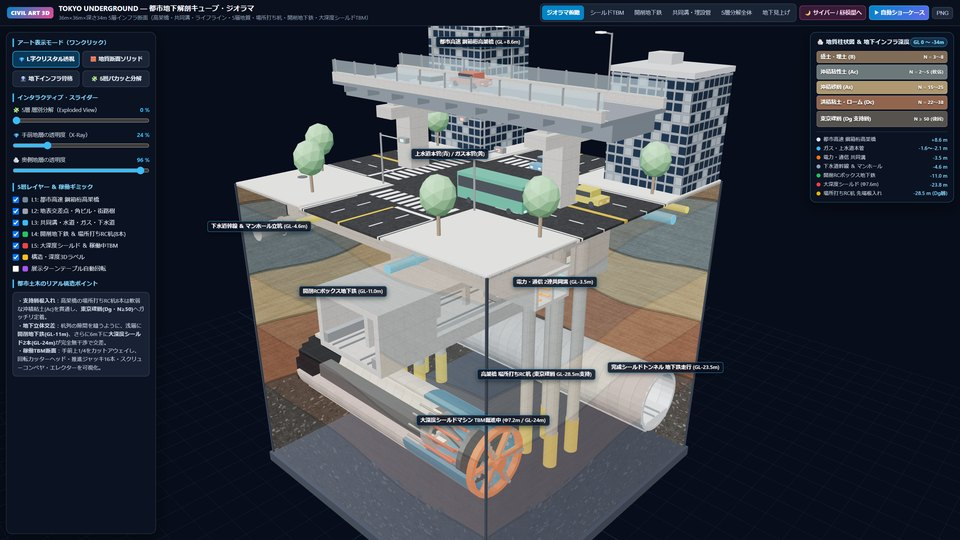

NEW / 土木デジタルアート ▶ 3Dビューアを起動TOKYO UNDERGROUND — 都市地下解剖キューブ
36m×36m×深さ34mの都市交差点直下をスパッと輪切り。都市高速高架橋・共同溝＆上下水道・5層地質断面（東京礫層支持杭）・開削地下鉄・1/4カットアウェイ稼働中シールドマシンTBMまでを完全無干渉で立体交差再現。
- ワンクリックで「L字透視 / ソリッド地質 / 骨格 / 5層パカッと分解」切替
- サイバーネオン ⇔ 昼ミニチュア模型テーマ切替・地質柱状図HUD付